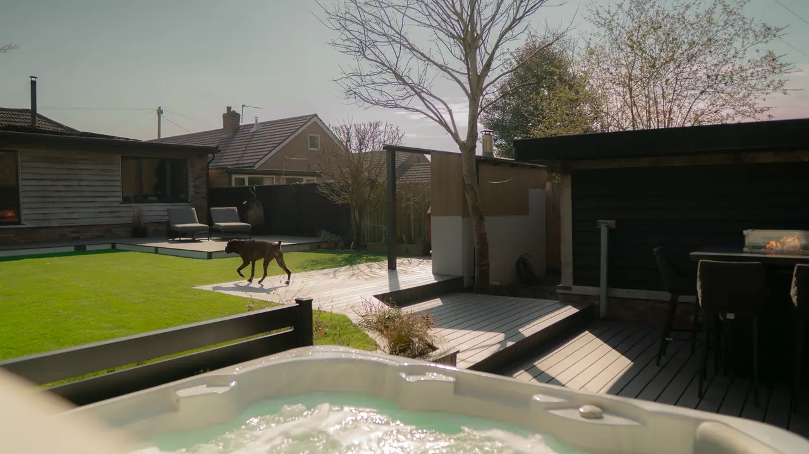

Built, then photographed.
Decks, garden rooms and bars from gardens across Norfolk and Suffolk. More than 500 composite decks since 2016, and every photo here is a real job.
One garden, every angle.
Steps, raised planters, a hot tub and a fire-table bar, all on one deck. Tap any photo to see it larger.
Transcend Lineage, Carmel.
Transcend Lineage in Carmel: a raised, curved deck with curved steps and black railing, set into planting. About the range
Transcend in Island Mist.
Two decks in Island Mist, the standard Transcend colour. About the range
More Trex Transcend.
A grey Transcend deck with a covered kitchen, dining and lounge. About the range
Trex Signature.
A warm brown Signature deck with a water feature and a raised terrace. About the range
Trex Enhance.
Enhance on real decks, including Rocky Harbor from the Naturals collection. About the range
Curved decking.
Some of the largest curved Trex decks installed anywhere in the UK.
More decks.
Waterside, wraparound and multi-level, each one built to its garden.
Deck railing.
Balusters and glass, many of them by the water. More on railing
Garden rooms.
Rooms and the decking that leads to them.
Want something like this in your garden?
Message me on WhatsApp with a few photos of your space, and I'll tell you honestly what's possible.
Or call 07983 531860